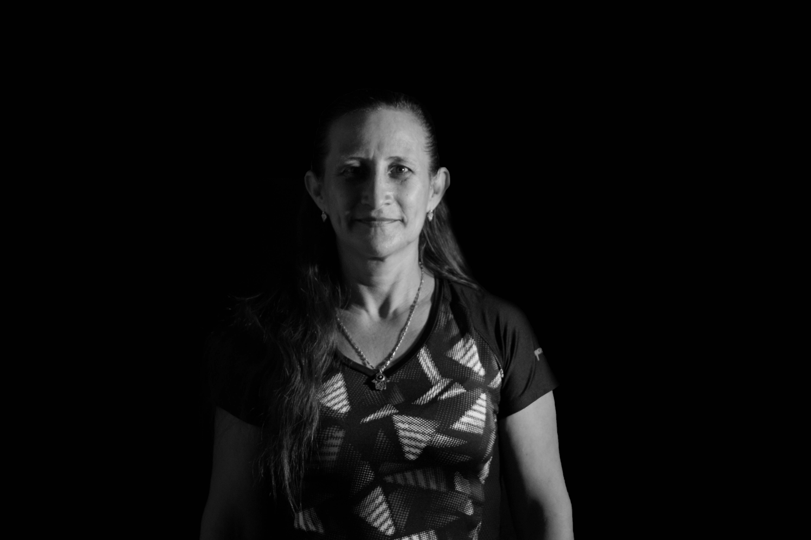
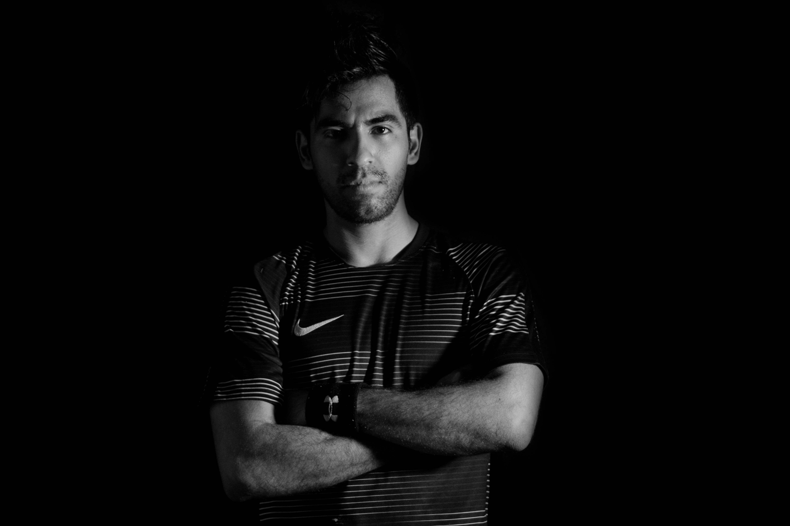
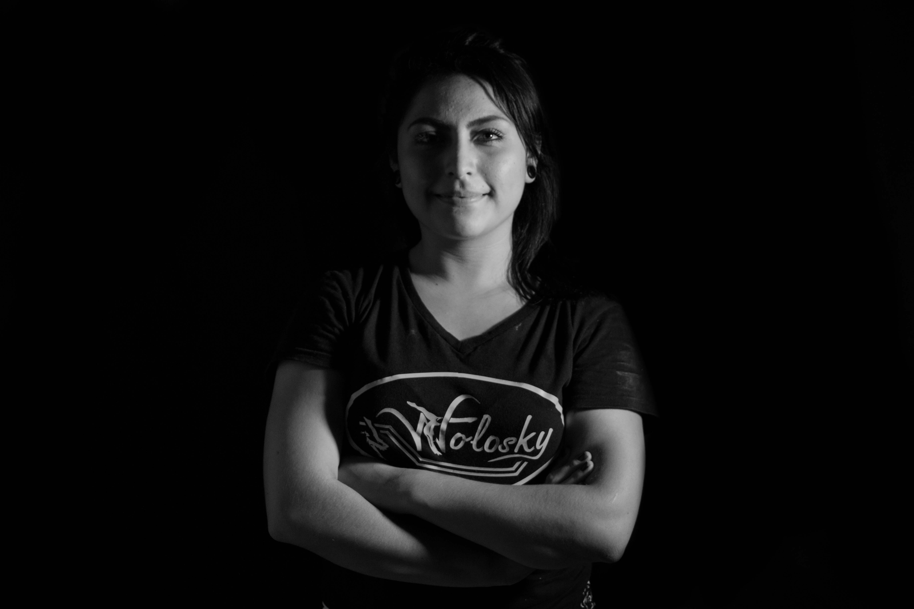
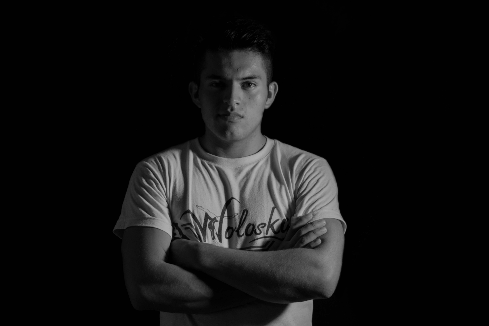
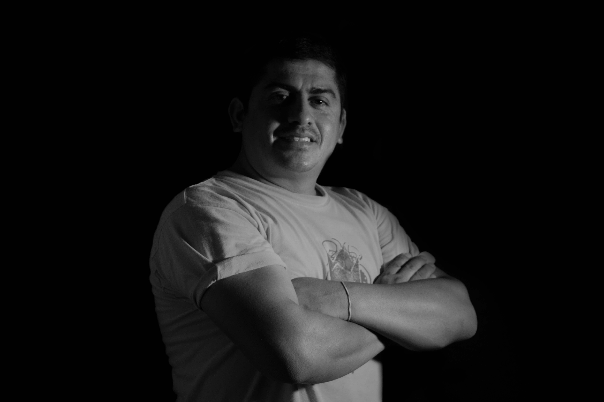

Inicio
Quienes Somos
Noticias
Equipo
Contacto
Inicio
Quienes Somos
Noticias
Equipo
Contacto

1
Rebeca Wolosky
2
Moisés Marín
3
Diana Lizeth Archila Castañón
4
Uzías Calvo Ramírez
5
Entrenador
Swipe Icon
Down/Next Arrow
Lic. Rebeca Wolosky Álvarez
"Hola a todos, soy la fundadora de la Academia de Gimnasia Wolosky con mas de 30 años de sus inicios"
Contactanos...

Lic. Moisés Marín
"Entrenador representante de Academia de Gimnasia Wolosky"
Contactanos...

Lic. Diana Lizeth Archila Castañón
“Me gusta porque es un deporta que implica mucha disciplina, mucha constancia, así como mucha dedicación para poder vencer tus miedos.”
Contactanos...

Lic. Uzías Calvo Ramírez
"Soy entrenador de Gimnasia Artística. Me gusta la gimnasia porque es un deporte único en el cual exige que tu cuerpo se desarrollé al máximo, y aprendes cada día nuevos elementos, elasticidad, flexibilidad, fuerza, etc…""
Contactanos...

Lic. Entrenador
"Soy entrenador de Gimnasia Artística"
Contactanos...